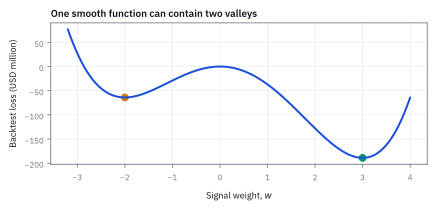
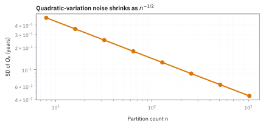
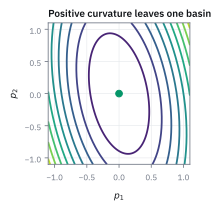

12.1 Why Ordinary Calculus Fails on Brownian Motion
ผลรวมก้าวเล็กกำลังสองไม่หาย แม้แบ่งเวลาให้ถี่ขึ้น
ลองบันทึกจุดเดินสุ่มด้วย 50, 200 และ 1,000 ช่วง แล้วรวมขนาดการกระโดดกำลังสอง: เมื่อซอยกริดละเอียดขึ้น ผลรวมจะไปที่ 0 หรือไม่?
เฉลย: เมื่อทดลองด้วย 50, 200 และ 1,000 ช่วง ผลรวมกำลังสองของก้าว Brownian ไม่ไปที่ 0 เพราะเก็บผลขนาดเดียวกับเวลาไว้ แม้แต่ละก้าวเล็กลง
เศษก้าวแต่ละชิ้นเหมือนฝุ่น แต่รวมกันไม่หาย; นี่คือ quadratic variation ที่ทำให้ chain rule ต้องเปลี่ยน
ศัพท์ที่ใช้ในหัวข้อนี้
- Brownian motion
- stochastic process ที่มี increments อิสระ แจกแจง Normal และมี variance เท่ากับเวลาที่ผ่านไป ใช้เป็นตัวขับ random noise ในแบบจำลองราคาต่อเนื่อง
- quadratic variation
- limit ของผลรวมกำลังสองของ increments เมื่อ mesh ของเวลาเล็กลง ใช้วัดความหยักสะสมและเป็นต้นกำเนิดของ Itô correction
- volatility
- ขนาด standard deviation ของผลตอบแทนต่อรากเวลา ใช้แปลง Brownian noise ให้มีความผันผวนตาม risk factor ที่กำลังจำลอง
- realized variance
- ผลรวมกำลังสองของผลตอบแทนที่สังเกตได้บนช่วงเวลา ใช้ประมาณความหยักที่เกิดขึ้นจริงจากข้อมูลหรือ simulation
- option
- สัญญาที่ให้สิทธิ์ซื้อหรือขาย underlying ตามเงื่อนไขที่กำหนด ใช้รับ exposure ต่อทิศทางและความโค้งของราคา
- underlying
- สินทรัพย์อ้างอิงที่กำหนด payoff ของ derivative contract ใช้เชื่อมการขยับของ SPY กับมูลค่า option
- expected value
- ค่าเฉลี่ยถ่วงด้วย probability ของผลลัพธ์ทั้งหมด ใช้บอกจุดศูนย์กลางตามแบบจำลองของ random variable
- standard deviation
- รากที่สองของ variance ใช้วัดความกว้างของ distribution ในหน่วยเดียวกับตัวแปรเดิม
- covariance
- ตัววัดว่าตัวแปรสองตัวเคลื่อนไปด้วยกันเชิงเส้นเพียงใด ใช้รวมความเสี่ยงของหลายปัจจัย
- payoff
- เงินสดหรือมูลค่าที่สัญญาจ่ายตามผลลัพธ์ของ underlying ใช้ระบุสิ่งที่ derivative ต้องให้ราคา
- spread
- ความกว้างหรือการกระจายของค่าที่เป็นไปได้ ใช้สื่อระดับ sampling uncertainty รอบค่ากลาง
- factor
- ตัวคูณที่ปรับขนาด quantity หนึ่งไปสู่อีก quantity ใช้เชื่อม Brownian variation กับ variance ของสินทรัพย์
- stochastic process
- ชุด random variables ที่เรียงตามเวลา ใช้แทนการเคลื่อนไหวของราคา อัตราดอกเบี้ย หรือ risk factor
สัญลักษณ์ที่ใช้ในหัวข้อนี้
| สัญลักษณ์ | ความหมาย | หน่วย |
|---|---|---|
| $W_t$ | standard Brownian motion ณ เวลา $t$ | $\sqrt{\text{year}}$ |
| $t,T$ | เวลาและ horizon รวม | year |
| $n$ | จำนวนช่วงเท่ากันใน partition | ช่วง |
| $\Delta t$ | ความยาวหนึ่งช่วง เท่ากับ $T/n$ | year |
| $\Delta W_i$ | Brownian increment ในช่วงที่ $i$ | $\sqrt{\text{year}}$ |
| $Z_i$ | independent standard Normal draw | ไม่มีหน่วย |
| $Q_n$ | ผลรวมกำลังสองของ increments บน partition $n$ ช่วง | year |
| $\sigma$ | annual volatility ของ log return | $1/\sqrt{\text{year}}$ |
ที่มาที่ไป: หลักฐานว่าเครื่องมือเดิมใช้ไม่ได้จริง ๆ
ก่อนจะขอให้ใครเรียนกฎชุดใหม่ ต้องแสดงก่อนว่ากฎเดิมพังจริง ไม่ใช่แค่ไม่สะดวก
ใน calculus ที่เรียนกันมา เวลากระจายอนุกรม พจน์อันดับสองจะเล็กจนทิ้งได้เสมอ ซึ่งเป็นสมมติฐานที่ทำให้ทุกอย่างทำงาน
หัวข้อนี้แสดงหลักฐานสองชิ้นว่าสมมติฐานนั้นผิดสำหรับเส้นทางสุ่ม ชิ้นแรกคือผลรวมของการขยับยกกำลังสอง ไม่หายไป และชิ้นที่สองคือมันแทบไม่เหวี่ยงเลย แปลว่ามันเป็นค่าคงที่จริง ๆ ไม่ใช่ของสุ่มที่บังเอิญไม่หาย
พอทิ้งพจน์นั้นไม่ได้ กฎลูกโซ่ที่เรียนมาก็ให้คำตอบผิด และนั่นคือเหตุผลทั้งหมดที่ต้องมีบทนี้
ใครสะดุด ทำไมถึงต้องเปลี่ยนกฎ
ราว ๆ ค.ศ. 1827 Robert Brown ส่องกล้องจุลทรรศน์เห็นเกสรดอกไม้กระโดดไปมาในน้ำ ยังอธิบายไม่ได้อีกเกือบร้อยปี
ค.ศ. 1900 Louis Bachelier เขียนวิทยานิพนธ์ปริญญาเอกเรื่อง Théorie de la spéculation ที่ Sorbonne เป็นคนแรกที่ใช้ stochastic process เพื่ออธิบายราคาหุ้น เขาเขียน Brownian motion ในรูปที่ค่าเปลี่ยนแปลงอิสระทุกช่วง แต่ไม่มี calculus สำหรับมัน
ค.ศ. 1905 Einstein เขียนบทความ Brownian motion ในมุมฟิสิกส์ — อธิบายว่าอนุภาคกระโดดเพราะถูกโมเลกุลน้ำชน
ค.ศ. 1923 Norbert Wiener ทำให้ Brownian motion เป็นทฤษฎีทางคณิตศาสตร์ที่เข้มงวด path ของมันต่อเนื่องทุกที่ แต่ differentiable ไม่เป็นที่ไหนเลย ตรงนี้แหละที่ chain rule ปกติพัง เพราะ chain rule สมมติว่า function ที่นำไปแทนค่ามี derivative
ค.ศ. 1944 Kiyosi Itô สร้าง calculus ชุดใหม่ที่ใช้ได้กับ Brownian motion จุดสำคัญคือเขาเก็บพจน์ $(dW)^2 = dt$ ที่ calculus ปกติทิ้ง ผลงานนี้ได้รับการยอมรับว่าเป็นรากฐานของทุกสูตรตั้งราคา derivative ในปัจจุบัน
Worked Example — โจทย์และสิ่งที่ให้มา
โจทย์ให้อะไรมาบ้าง: function เรียบขยับขนาด $\Delta t$ ต่อช่วง แต่ Brownian motion ขยับขนาด $\sqrt{\Delta t}$ เพราะ conditional variance ของ increment คือ $\Delta t$ เมื่อนำไป square จึงกลับมาอยู่ระดับเดียวกับเวลา
ขั้นที่ 1 — สร้าง Brownian increment
จะพิสูจน์ว่าวิธีคิดแบบเดิมใช้ไม่ได้ ต้องเริ่มจากสร้างก้าวเล็ก ๆ ตามนิยามก่อน
$T$ คือ horizon หน่วยปี, $n$ คือจำนวนช่วง, $\Delta t$ คือความยาวช่วง, $Z_i$ คือ independent standard Normal draw และ $\Delta W_i$ จึงมี variance เท่ากับ $\Delta t$
ทำไมรากของเวลา — ที่มาของ $\sqrt{\Delta t}$
จาก Normal distribution ที่มี mean ศูนย์ ค่า variance เป็นตัวเดียวที่บอกว่า increment ใหญ่แค่ไหน ถ้า variance ไม่ใช่ $\Delta t$ จะได้ path ที่ไม่ต่อเนื่อง (variance ใหญ่เกินไป) หรือ path ที่เรียบเกินไป (variance เล็กเกินไป)
Brownian motion นิยามให้ increment ระหว่างสองเวลาเป็น Normal ที่มี mean ศูนย์ และ variance เท่ากับความยาวช่วงเวลา $\Delta t$
คำถามที่ต้องถามดัง ๆ: ทำไม variance เป็น $\Delta t$ แทนที่จะเป็น $(\Delta t)^2$ เหมือน function เรียบ?
คำตอบ: ถ้า variance เป็น $(\Delta t)^2$ เมื่อซอย grid ละเอียดขึ้น ก้าวจะหดเร็วเกินไป ผลบวกก้าวทั้งหมดจะเป็นศูนย์ แทนที่จะเป็นการเดินแบบสุ่ม
$\Delta t$ เป็นขนาดพอดีที่ทำให้ Central Limit Theorem ใช้งานได้ — ก้อนเล็ก $n$ ก้อน แต่ละก้อนมี variance $T/n$ รวมกันแล้ว variance ทั้งก้อนเท่ากับ $T$ ไม่ขึ้นกับ $n$
ขั้นที่ 2 — ผลรวมกำลังสองมี mean คงที่
นี่คือหลักฐานชิ้นแรก ผลรวมของก้าวยกกำลังสองไม่หายไปตามที่ควร ห้าบรรทัดนี้ชี้จุดที่ผิดปกติไว้ที่บรรทัดสอง ตรงที่กำลังสองของรากกลายเป็นช่วงเวลาเต็ม ๆ ไม่ใช่กำลังสองของช่วงเวลาอย่างที่เส้นเรียบเป็น
เขียน increment ในรูปก้อนมาตรฐานคูณรากของช่วงเวลา ตามสมบัติที่ 2 ของหัวข้อ 10.1 แล้วยกกำลังสอง รากหายไปกับกำลังสองพอดี เหลือช่วงเวลาเปล่า ๆ คูณกำลังสองของก้อนมาตรฐาน
ตรงนั้นคือจุดที่ทุกอย่างในบทนี้เกิดขึ้น ก้อนสุ่มที่เคยมีขนาดเท่ารากของเวลา พอยกกำลังสองแล้วกลายเป็นขนาดเท่าเวลาพอดี ไม่เล็กกว่า ไม่ใหญ่กว่า
ที่เหลือเป็นเลขคณิต บวกทุกช่วงแล้วดึงตัวคูณออกมา ก้อนมาตรฐานมีค่าเฉลี่ยศูนย์ ค่าเฉลี่ยของกำลังสองจึงเท่ากับ variance ซึ่งเป็น 1 ตามนิยาม บวก $n$ ก้อนที่เท่ากัน $n$ ตัดกันหมด เหลือ $T$ ไม่ว่าจะซอยละเอียดแค่ไหน
ถ้าไม่ใช่กำลังสอง ใช้กำลังสามได้ไหม — cubic variation หายไปจริง
ถ้าคิดว่า quadratic variation อาจเป็นเรื่องบังเอิญ ลองคิดว่าจะเกิดอะไรกับกำลังอื่น กำลังสามให้ expected value ที่หายไปตาม $1/\sqrt{n}$ กำลังสี่หายเร็วยิ่งกว่า มีแค่กำลังสองเท่านั้นที่ลู่เข้าค่าจำกัดไม่เป็นศูนย์
ลองเปลี่ยนจากกำลังสองเป็นกำลังสาม: $|\Delta W_i|^3$ มีตัวคูณเวลาเป็น $(T/n)^{3/2}$ แทนที่จะเป็น $(T/n)^1$
เมื่อรวม $n$ พจน์ ตัว $n$ หนึ่งตัวจากจำนวนพจน์หักกับ $n^{-3/2}$ เหลือ $n^{-1/2}$ ซึ่งหายไปเมื่อซอยละเอียด
นี่คือเหตุผลว่าทำไมกำลังสองจึง "พิเศษ" — มันเป็น order เดียวที่ไม่ตาย กำลังหนึ่งเป็นผลบวกที่เหวี่ยง กำลังสามขึ้นไปตายหมด กำลังสองไปหา $T$ พอดี
ขั้นที่ 3 — ความไม่แน่นอนหดเมื่อ grid ละเอียด
หลักฐานชิ้นที่สอง ผลรวมนั้นไม่ได้แค่มีค่าเฉลี่ยคงที่ แต่แทบไม่เหวี่ยงเลยเมื่อซอยถี่พอ สองชิ้นรวมกันจึงสรุปได้ว่ามันเป็นค่าคงที่จริง ไม่ใช่ของสุ่มที่บังเอิญเฉลี่ยออกมาสวย และนั่นคือใบอนุญาตให้เขียนกฎในบทนี้ได้
ค่าเฉลี่ยเป็น $T$ แล้ว คำถามต่อไปคือมันเหวี่ยงรอบ $T$ แค่ไหน ใช้สูตรลัดของ variance จากหัวข้อ 1.4 โดยค่าเฉลี่ยของกำลังสี่ของระฆังมาตรฐานเท่ากับ 3 ซึ่งหัวข้อ 10.5 คำนวณด้วยการอินทิเกรตทีละส่วนไว้แล้ว ได้ variance ต่อก้อนเป็น 2
บวก $n$ ก้อนที่เป็นอิสระต่อกันตามหัวข้อ 6.5 ตัวคูณข้างหน้าออกมาเป็นกำลังสอง $n$ ตัวหนึ่งจึงตัดกัน เหลือ $n$ คาอยู่ใต้เศษ ถอดรากกลับได้ความเหวี่ยงที่หดตามรากของจำนวนช่วง
ลองด้วยเลขจริง ซอยหนึ่งหมื่นช่วง ความเหวี่ยงเหลือแค่ราวหนึ่งเปอร์เซ็นต์ครึ่งของ $T$ แปลว่าผลรวมนี้แทบไม่สุ่มเลย ทั้งที่ทุกชิ้นส่วนของมันสุ่มล้วน ๆ มันเป็นตัวเลขที่รู้ล่วงหน้าได้ และความรู้ล่วงหน้านั้นคือของที่เราจะใช้ตลอดทั้งบท
ลองตัวเลข — $T=1,\;n=4$
ตัวเลข $Q_4 = 0.620$ ห่างจาก $T=1$ ค่อนข้างมาก แต่ standard deviation 0.707 บอกว่าระยะนี้ไม่น่าแปลกใจสำหรับ $n$ แค่ 4 เพิ่ม $n$ เป็น 10,000 ก็จะได้ $Q_n$ ติด $T$ แน่น
ลองตัวเลขเพื่อให้เห็นว่าผลรวมกำลังสอง "เกือบ" เท่ากับเวลา แต่ยังเหวี่ยง
$n=4$ ให้ $\Delta t=0.25$ และ standard deviation ของ $Q_4$ ยังสูงถึง 0.707 คือ error กว้างมาก ยังห่างจากค่า $T=1$ อยู่
แต่ถ้าเพิ่มเป็น $n=10{,}000$ จะได้ standard deviation $\approx 0.014$ ซึ่งเล็กจนแทบจะเป็นค่าคงที่ ตรงนี้แหละที่ calculus ปกติพัง เพราะผลรวมกำลังสองไม่ไปที่ศูนย์ แต่ไม่ได้ระเบิด มันไปที่ $T$ พอดี
ขั้นที่ 4 — กฎ Itô เป็นกฎของ limit
สรุปเป็นกฎที่จะใช้ตลอดบทถัดไป พร้อมย้ำว่ามันเป็นข้อความเรื่อง limit ไม่ใช่การคูณตัวเลขจิ๋วสองตัวเข้าด้วยกัน
mean-square convergence ของ $Q_n$ ไปยัง $T$ ทำให้เขียน shorthand ว่า $(dW_t)^2=dt$; อีกสองพจน์มี order สูงกว่า $dt$ จึงหายไปใน limit
ที่มาของตาราง Itô — ทำไม $dW\,dt=0$ และ $(dt)^2=0$
ตาราง Itô ไม่ใช่สูตรให้ท่องจำ แต่เป็นผลของการนับอันดับล้วน ๆ พจน์ไหนที่เล็กกว่าช่วงเวลาหนึ่งก้าว จะหายไปเมื่อซอยช่วงถี่ขึ้นเรื่อย ๆ เหลือรอดเพียงพจน์เดียวที่มีอันดับพอดีกับช่วงเวลา
ทำไม $(dW)(dt)=0$: ผลคูณ $|\Delta W_i|\cdot\Delta t$ มี order $\Delta t^{3/2}$ ต่อช่วง รวม $n$ ช่วงก็ยังหายไปเพราะ $n\cdot(\Delta t)^{3/2}$ มี order $1/\sqrt{n}$
ทำไม $(dt)^2=0$: ผลบวก $(\Delta t)^2$ ทั้ง $n$ ช่วง มี order $T^2/n$ ซึ่งหายไปอีกเร็วกว่า
สรุป: ในสี่ช่องของตาราง $dW\times dW,\;dW\times dt,\;dt\times dW,\;dt\times dt$ เหลือรอดแค่ช่องเดียวคือ $(dW)^2=dt$
ทำไม chain rule ปกติพัง — Taylor remainder ที่ไม่หายไป
chain rule ปกติ: $df = f'\,dx$ chain rule ของ Itô: $df = f'\,dW + \frac{1}{2}f''\,dt$ ต่างกันตรงพจน์ที่สอง ซึ่งมาจาก Taylor remainder ที่ไม่หายไป
ใน calculus ปกติ ถ้า $x$ เป็น function เรียบ เราใช้ Taylor series กระจาย $f(x+\Delta x)$ แล้วทิ้งพจน์ $(\Delta x)^2$ เพราะมัน order $\Delta t$ ยกกำลังสอง หายไปเมื่อ limit
แต่กับ Brownian motion $\Delta W$ มีขนาด $\sqrt{\Delta t}$ ดังนั้น $(\Delta W)^2$ มีขนาด $\Delta t$ ซึ่งเป็น order เดียวกับ $dt$ เอง — ทิ้งไม่ได้
ตรงนี้คือจุดที่ chain rule ปกติพัง พจน์ $\frac{1}{2}f''(W_t)\,dt$ คือ "ค่าเช่า" ที่ต้องจ่ายเพราะ path ขรุขระ และนี่คือ Itô's lemma ที่จะสร้างเต็มรูปในหัวข้อ 12.2
เผลอคิดว่า $(dW)^2$ เป็น random variable — ไม่ใช่
ผู้เรียนหลายคนอ่านตาราง Itô แล้วเข้าใจว่าทุกครั้งที่จับตัวอย่างมาวัด กำลังสองของการขยับจะเท่ากับช่วงเวลาพอดีเป๊ะ นั่นผิด
ความจริงคือกำลังสองของการขยับแต่ละก้าวยังเป็นของสุ่มอยู่ บางก้าวมากกว่าช่วงเวลา บางก้าวน้อยกว่า และต่างกันได้มากด้วย
สิ่งที่เท่ากับช่วงเวลาคือปลายทางของ ผลรวม ทั้งหมด ไม่ใช่ค่าของทีละก้าว ยิ่งซอยละเอียด ความสุ่มของผลรวมยิ่งหดลง จนในที่สุดเหลือแต่ตัวเลขนิ่ง ๆ ตัวเดียว
ความต่างนี้สำคัญเวลาเขียนโปรแกรมจำลอง ถ้าเผลอแทนกำลังสองของการขยับ ด้วยช่วงเวลาตรง ๆ ทีละก้าว เส้นทางที่ได้จะเรียบเกินจริง และความเสี่ยงที่วัดออกมาจะต่ำกว่าความเป็นจริงอย่างเป็นระบบ
แล้วเอาไปใช้ทำอะไรได้จริงบ้าง
การรู้ว่าทำไมเครื่องมือคำนวณเดิมใช้ไม่ได้ ทำให้เข้าใจว่าทำไมต้องเรียนกฎชุดใหม่
ใช้เป็นเหตุผลว่าทำไมสูตรตั้งราคา option ถึงมีพจน์เพิ่มที่ไม่มีในวิชา calculus ปกติ
ใช้เป็นฐานของการวัดความผันผวนจากข้อมูลจริง ซึ่งอาศัยปริมาณที่ไม่หายไปนี้โดยตรง
ใช้ตรวจโค้ดจำลอง เพราะผลรวมของการขยับยกกำลังสองที่จำลองได้ต้องเข้าใกล้ค่าที่ทฤษฎีบอก
Figure 12.1a — Smooth versus rough scaling

เส้นเรียบมี squared increments หดสู่ 0 แต่ Brownian path มีผลรวมกำลังสองเกาะรอบ 1; ความต่างนี้คือเหตุผลที่ chain rule ต้องเปลี่ยน
Figure 12.1b — Sampling spread of quadratic variation

ที่ horizon 1 ปี ความกว้างเชิงทฤษฎีลดจาก 0.50 เมื่อมี 8 ช่วงเหลือ 0.044 เมื่อมี 1,024 ช่วง; grid หยาบจึงไม่ควรถูกอ้างว่าเท่ากับ 1 แบบเป๊ะ
Figure 12.1c — Itô multiplication table

มีเพียงช่อง Brownian คูณ Brownian ที่รอดใน order ของเวลา ช่องอื่นเล็กเกินไปเมื่อรวมทั่ว horizon
คำตอบ ตรวจเอง และแปลว่าอะไร
คำตอบและความหมาย: ตั้ง horizon 1 ปี จะได้ standard deviation ของ $Q_n$ เท่ากับ 0.200, 0.100 และ 0.0447 สำหรับ 50, 200 และ 1,000 steps ตามลำดับ ดังนั้นแต่ละ run ไม่จำเป็นต้องเท่ากับ 1 แต่ควรเข้าใกล้ 1 เมื่อเพิ่ม resolution และเมื่อคูณด้วย annual variance $\sigma^2$ estimator จะเข้าใกล้ $\sigma^2T$
ตรวจเองใน 10 วินาที: กดรากที่สองของ 2/50, 2/200 และ 2/1000 ต้องได้ 0.200, 0.100 และ 0.0447 ตามลำดับ. ใช้ check นี้เลือกจำนวน steps ให้ความสั่นของ realized quadratic variation ต่ำพอก่อนรายงาน annual variance.
กับดัก: เปลี่ยน limit ให้เป็นสมการบน grid หยาบ
สี่ increments ที่ถูกเลือกให้มีขนาดเท่ากันอาจให้ผลรวมกำลังสองเท่ากับเวลาแบบตั้งใจ แต่นั่นไม่ใช่ Brownian sample ทั่วไป กฎ $(dW)^2=dt$ คือ shorthand ของ quadratic-variation limit—ประกาศว่าทุก finite path ต้องตรงเป๊ะก็เหมือนดูรูปโปรไฟล์แล้วสรุป covariance ทั้งตลาด
ข้อจำกัด: วิธีนี้สมมติอะไร และของจริงเป็นอย่างไร
| เรื่อง | วิธีนี้สมมติว่า | ของจริงเป็นอย่างไร | ผลที่ตามมาเวลาใช้งาน |
|---|---|---|---|
| ข้อมูลจริง | ผลรวมยกกำลังสองเข้าใกล้เวลาที่ผ่านไป | ข้อมูลจริงมีสัญญาณรบกวนจากโครงสร้างตลาด | ค่าที่วัดได้สูงเกินจริงเมื่อวัดถี่มาก |
| ความต่อเนื่อง | ไม่มีการกระโดด | มีการกระโดด | ค่าที่วัดได้จะรวมการกระโดดเข้ามาด้วย ซึ่งควรแยกออกก่อนตีความ |
| ขอบเขตของข้อสรุป | ผลนี้ใช้ได้กับข้อมูลทุกชนิด | ใช้ได้กับกระบวนการที่มีสมบัติแบบนี้เท่านั้น | อย่านำไปใช้กับอนุกรมเวลาที่ไม่ใช่ random walk โดยไม่ตรวจก่อน |
แถวแรกเป็นเหตุผลที่การวัดความผันผวนจากข้อมูลรายวินาทีให้ค่าที่สูงผิดปกติ
สรุปที่ใช้ได้จริง
- Brownian increment มี scale $\sqrt{\Delta t}$ จึงทำให้กำลังสองอยู่ใน order ของ $\Delta t$
- $Q_n$ มี expected value $T$ และ standard deviation $T\sqrt{2/n}$ จึงลู่เข้าเมื่อ grid ละเอียด
- กฎ $(dW)^2=dt$ เป็น shorthand ของ limit ไม่ใช่ equality ของทุก finite increment
- การทิ้งพจน์อันดับสองลบ curvature effect ที่จำเป็นต่อการตั้งราคา option